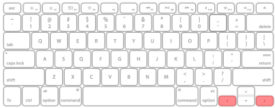

Design Heuristics Everything you never didn't not want to know.

Findability
Findability precedes usability. In the alphabet and on the Web. You can’t use what you can’t find.
Good design is a lot like clear thinking made visual.
— Edward Tufte
Clear
Is it easy to understand
Path to task completion obvious
Simple and succinct
Would a user find it easy to describe?
Includes messaging/text, not just UI/Visual/UX design
Controllable
Incredible change happens in your life when you decide to take control of what you do have power over instead of craving control over what you don't.
Donna nobis pacem
The human body has no more need for cows' milk than it does for dogs' milk, horses' milk, or giraffes' milk.
Michael Klaper M.D.
Acta Non Verba
I think if you want to eat more meat you should kill it yourself and eat it raw so that you are not blinded by the hypocrisy of having it processed for you.